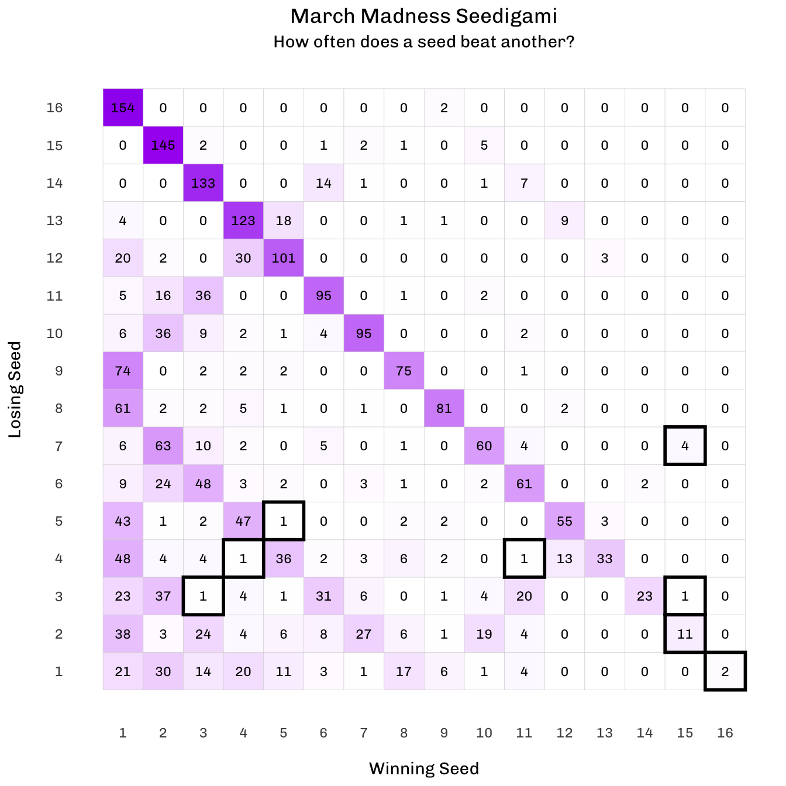

How does each seed perform?
March Madness is currently happening. Last night, I stumbled upon this tweet:
Seedigami! NC State is the first 11 seed to beat a 4 seed in NCAA tournament history pic.twitter.com/FbKcQ7Qwdi
— SaintArkweather (@SwordfishCFH) March 31, 2024
In case you’re not familiar, Scorigami is a fun concept in sports which refers to a game/match that finishes in a score that has not happened before in the history of a sport league. This can be applied to any sport, but perhaps it is most popular in American football, and there’s even a Twitter account devoted to NFL Scorigami.
The tweet above is a nice little spin-off of Scorigami. It is Scorigami, but for March Madness seeding, hence the name “Seedigami”. The purpose is to illustrate whether one seed has recorded a victory against other seeds in the history of the tournament. Last night, it was the first instance ever where an 11 seed (NC State) won a game against a 4 seed (Duke).
As soon as I saw this tweet, I immediately thought about making a slightly different version of it. That is, a heatmap showing how often each seed has beaten every other seed throughout the history of March Madness.
Here, let’s only consider every year starting from 1985, since the tournament was expanded to 64 teams that year. I can easily get the data from the famous March Machine Learning Mania Kaggle competition, whose 10th edition is in progress.
What I’ll need are the following tables (more detailed descriptions can be found in the data link above):
MNCAATourneyCompactResults: for game results
MNCAATourneySeeds: for seeding info
Now, I’ll (briefly) walk through my entire process of creating the desired heat map, starting with data preparation. First, let’s import the data and get a glimpse of both tables.
library(tidyverse)
library(janitor)
results <- read_csv("MNCAATourneyCompactResults.csv") |>
clean_names()
seeds <- read_csv("MNCAATourneySeeds.csv") |>
clean_names()results# A tibble: 2,451 × 8
season day_num w_team_id w_score l_team_id l_score w_loc num_ot
<dbl> <dbl> <dbl> <dbl> <dbl> <dbl> <chr> <dbl>
1 1985 136 1116 63 1234 54 N 0
2 1985 136 1120 59 1345 58 N 0
3 1985 136 1207 68 1250 43 N 0
4 1985 136 1229 58 1425 55 N 0
5 1985 136 1242 49 1325 38 N 0
6 1985 136 1246 66 1449 58 N 0
7 1985 136 1256 78 1338 54 N 0
8 1985 136 1260 59 1233 58 N 0
9 1985 136 1314 76 1292 57 N 0
10 1985 136 1323 79 1333 70 N 0
# ℹ 2,441 more rowsseeds# A tibble: 2,558 × 3
season seed team_id
<dbl> <chr> <dbl>
1 1985 W01 1207
2 1985 W02 1210
3 1985 W03 1228
4 1985 W04 1260
5 1985 W05 1374
6 1985 W06 1208
7 1985 W07 1393
8 1985 W08 1396
9 1985 W09 1439
10 1985 W10 1177
# ℹ 2,548 more rowsEach tournament consists of 63 games. Notice that the data also include games from the First Four.
# A tibble: 38 × 2
season n
<dbl> <int>
1 2011 67
2 2012 67
3 2013 67
4 2014 67
5 2015 67
6 2016 67
7 2017 67
8 2018 67
9 2019 67
10 2022 67
# ℹ 28 more rowsAnd TIL that the First Four used to be the “Opening round” (2001-2010), before the name was switched to First Four in 2011 and remains the same until now. These facts can be used in the data preparation process to keep only the 64 teams in the first round of every tournament.
# main 64-team field
results_main <- results |>
group_by(season) |>
mutate(game_num = row_number()) |> # define game number for each tournament
ungroup() |>
filter(!(season %in% 2001:2010 & game_num == 1)) |>
filter(!(season %in% 2011:2023 & game_num %in% 1:4))
results_main |>
count(season) |>
arrange(n)# A tibble: 38 × 2
season n
<dbl> <int>
1 2021 62
2 1985 63
3 1986 63
4 1987 63
5 1988 63
6 1989 63
7 1990 63
8 1991 63
9 1992 63
10 1993 63
# ℹ 28 more rowsNotice in 2021 there were only 62 games played instead of 63. I went back and check and found that there was a no-contest game between VCU and Oregon in 2021 due to COVID, which explains why there was 1 less game. (Now I do remember this.)
What I want now is a table with the seeds for the winning and losing teams in the data. This can be done by pivoting the results table and then joining it with the seeding table.
Note that the ongoing 2024 tournament game results are not provided in the data, so I self-collected the 2024 results (as of today, up to the Elite 8).
(The 2024 data can probably be obtained via a freely-available data resource such as the hoopR, ncaahoopR, or cbbdata R packages, to name a few.)
results_seeds <- results_main |>
select(season, w_team_id, l_team_id) |>
mutate(matchup = str_c(w_team_id, l_team_id)) |>
pivot_longer(ends_with("team_id"),
names_to = "outcome",
values_to = "team_id") |>
mutate(outcome = str_remove(outcome, "_team_id")) |>
left_join(seeds)
results_seeds_w_l <- results_seeds |>
mutate(seed = str_remove_all(seed, "[:alpha:]"),
seed = as.numeric(seed)) |>
select(-team_id) |>
pivot_wider(names_from = outcome,
values_from = seed) |>
select(-matchup)
results24 <- tibble(
season = 2024,
w_l = c("1_16", "9_8", "5_12", "13_4", "11_6", "3_14", "7_10", "2_15",
"1_9", "5_13", "3_11", "2_7", "1_5", "3_2", "1_3",
"1_16", "9_8", "12_5", "4_13", "6_11", "3_14", "7_10", "2_15",
"1_9", "4_12", "6_3", "2_7", "4_1", "6_2", "4_6",
"1_16", "9_8", "12_5", "4_13", "11_6", "14_3", "10_7", "2_15",
"1_9", "4_12", "11_14", "2_10", "4_1", "11_2", "11_4",
"1_16", "8_9", "5_12", "4_13", "11_6", "3_14", "7_10", "2_15",
"1_8", "5_4", "3_11", "2_7", "1_5", "2_3", "1_2")
) |>
separate(w_l, into = c("w", "l"), sep = "_", convert = TRUE)
results_seeds_w_l <- results_seeds_w_l |>
bind_rows(results24)Now I have information on the winning and losing seeds for each game from 1985 up to today (April Fools’ Day - but no fooling…).
results_seeds_w_l# A tibble: 2,453 × 3
season w l
<dbl> <dbl> <dbl>
1 1985 9 8
2 1985 11 6
3 1985 1 16
4 1985 9 8
5 1985 3 14
6 1985 12 5
7 1985 5 12
8 1985 4 13
9 1985 2 15
10 1985 7 10
# ℹ 2,443 more rowsHow often has each of these combinations happened?
results_seeds_w_l |>
count(w, l)# A tibble: 128 × 3
w l n
<dbl> <dbl> <int>
1 1 1 21
2 1 2 38
3 1 3 23
4 1 4 48
5 1 5 43
6 1 6 9
7 1 7 6
8 1 8 61
9 1 9 74
10 1 10 6
# ℹ 118 more rowsTo handle the combinations that have never occurred, I create a table for every possible winning-losing seed combination, and then join with the existing table and update as needed.
# initialize with all zero's
all_matchups <- crossing(w = 1:16, l = 1:16, n = 0)
# join and update
all_matchups <- all_matchups |>
rows_update(count(results_seeds_w_l, w, l), by = c("w", "l"))
all_matchups# A tibble: 256 × 3
w l n
<int> <int> <dbl>
1 1 1 21
2 1 2 38
3 1 3 23
4 1 4 48
5 1 5 43
6 1 6 9
7 1 7 6
8 1 8 61
9 1 9 74
10 1 10 6
# ℹ 246 more rowsNow we can finally make the heat map.
all_matchups |>
ggplot(aes(w, l)) +
geom_tile(aes(fill = n), color = "lightgray") +
geom_text(aes(label = n, family = "Chivo"), size = rel(3)) +
scale_x_continuous(breaks = 1:16) +
scale_y_continuous(breaks = 1:16) +
scale_fill_gradient2(high = "purple") +
annotate("rect",
xmin = c(11, 15, 15, 3:5, 15, 16) - 0.5,
xmax = c(11, 15, 15, 3:5, 15, 16) + 0.5,
ymin = c(4, 3, 7, 3:5, 2, 1) - 0.5,
ymax = c(4, 3, 7, 3:5, 2, 1) + 0.5,
color = "black", fill = "transparent", linewidth = 1) +
labs(x = "\nWinning Seed",
y = "Losing Seed\n",
title = "March Madness Seedigami",
subtitle = "How often does a seed beat another?") +
theme_minimal(base_family = "Chivo") +
theme(panel.grid = element_blank(),
legend.position = "none",
plot.title = element_text(hjust = 0.5),
plot.subtitle = element_text(hjust = 0.5))
Some observations here:
The highlighted cells are those that I find interesting.
Teams don’t beat opposing teams with the same seed number that frequently (a 3, 4, and 5 have beaten their corresponding similarly-seeded opponent only once).
A 15 has beaten a 2 11 times. My favorite was Middle Tennessee beating Michigan State in 2016 (my first year following March Madness).
More interesting facts about the 15 seed: They’ve also beaten a 3 seed once (Saint Peter’s vs Purdue in 2022) and a 7 seed four times (which makes sense, given how often a 2 is beaten in the first round).
As previously mentioned, NC State vs. Duke (11 vs. 4) yesterday was the latest Seedigami.
And of course, the two famous 16 vs 1 upsets. (Will Purdue this year follow what Virginia did in 2019 - winning the title after being eliminated in the first round the year before?)
That’s it for now… Maybe more March Madness stuff to come… MAYBE.
How many days have passed since my last blog?
Until next time…